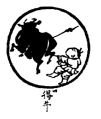

BuddhaSasana Home Page
This document is written in Vietnamese, with Unicode Times
font
 Dẫn
Vùi lấp ngoài đồng hoang đã lâu, ngày nay gặp được y. Do cảnh đẹp nên khó đuổi, mến cỏ non chẳng chịu thôi. Tâm ngang ngạnh khá mạnh, tánh hoang dã vẫn còn. Muốn được thuần hòa cần phải roi vọt.
Giảng Giải
Vùi lấp ngoài đồng hoang đã lâu, ngày nay gặp được y: Mỗi người chúng ta có tâm thể chân thật, mà bị vọng tình phủ che nhiều đời nhiều kiếp. Giống con trâu bị cỏ cây vùi lấp ngoài đồng hoang. Nay tuy đã nhận ra được tâm thể chân thật của chính mình, vậy mà khi nghe nói trái tai thì sân si liền dấy khởi ... chỉ nghe toàn tiếng hơn thua phải quấy, chớ không nhớ mình có sẵn Tánh nghe là tâm thể chân thật đang hiện hữu, cho nên nói vùi lấp ở ngoài đồng hoang. Do cảnh đẹp nên khó đuổi, mến cỏ non chẳng chịu thôi vì trâu còn mê cảnh đẹp, đuổi nó không chịu về, nó thích cỏ non cứ mải mê ăn chẳng chịu thôi. Chú mục đồng xỏ mũi kéo nó, nó không chịu quay đầu. Tánh thấy, tánh nghe tự nó không có đuổi theo ngoại cảnh, chỉ vì vọng tình, vọng thức che làm mờ đi. Chúng ta muốn cho nó luôn luôn hiển lộ mà ngược lại tình thức cứ phủ che làm cho nó khuất mờ. Tâm ngang ngạnh khá mạnh, tánh hoang dã vẫn còn : Tuy nhận ra tánh giác rồi, nhưng chưa phải xong việc mà còn phải gìn giữ nó luôn hiện hữu, song gìn giữ không phải dễ dàng. Vì thói quen lâu đời như mắt thấy sắc liền phân biệt tốt xấu, tai nghe tiếng liền phân biệt hay dở, mà không nhớ mình có tánh thấy, không nhớ mình có tánh nghe, chỉ rong ruổi theo hình thức, ngông cuồng chạy ngược chạy xuôi, kềm giữ thật là khó khăn. Muốn được thuần hòa cần phải roi vọt : muốn cho tâm được an tịnh, không chạy theo trần cảnh, thì khi vừa thấy vọng niệm dấy khởi phải rầy: Vọng, không thật! Nếu quở mà vọng không lặng, cứ giấy khởi hoài thì la: Mày là vọng tưởng đã dẫn tao đi mãi trong luân hồi sanh tử, hôm nay muốn dẫn tao xuống địa ngục nữa sao? Rầy la đó gọi là roi vọt trừng trị tâm thức ngông cuồng. Ðó là hình ảnh diễn tả tâm thức cuồng loạn chạy ngược chạy xuôi. Nhưng cách diễn tả này có chỗ không hợp nhất, con trâu chỉ cho tánh giác chân thật, mà cái chân thật thì không chạy. Bởi tình thức vọng động ngăn che làm cho tánh giác khuất đi, tình thức vọng động lặng rồi thì tâm thể hiển lộ. Ðây mượn hình ảnh con trâu ngông cuồng nói lên sự gìn giữ tâm chân thật luôn luôn hiển lộ thật là khó.
Tụng
Kiệt tận thần thông hoạch đắc cừ
Tâm cường lực tráng tốt nan trừ
Hữu thời tài đáo cao nguyên thượng
Hựu nhập yên vân thâm xứ cưDịch
Dùng hết thần thông bắt được y
Tâm hùng sức mạnh khó khăn ghì
Có khi vừa hướng cao nguyên tiến
Lại xuống khói mây mãi nằm ỳGiảng Giải
Chú mục đồng tận dụng hết sức lực mới bắt được trâu, xỏ mũi cột vàm. Tuy bắt được nó rồi, nhưng tâm nó cang cường, sức nó mạnh nên khó chế ngự điều phục, lại có khi nó vừa đến cao nguyên lại chui vào mây khói ở sâu trong đó.
Hành giả đã tận lực huân tu mới nhận được thể tánh chân thật của chính mình. Tuy đã nhận ra, nhưng nó không thường hiển lộ, vì tập khí lâu đời nên mỗi khi căn tiếp xúc trần liền phân biệt tốt xấu hay dở, chớ không nhớ mình có cái biết không phân biệt, và cứ như thế chạy theo trần cảnh khởi vô số vọng niệm khó mà điều phục. Cao nguyên là dụ cho tâm thể chơn thật đang hiển hiện, mây khói là dụ cho thức tình vọng tưởng. Có khi tâm thể chơn thật mới vừa hiện ra chưa dược ba phút, nó lại ẩn trong đám mây mờ vọng tưởng đang dấy khởi. Bị vọng tưởng che phủ, nó không hiện hữu giống như trâu lên cao nguyên đứng thì dễ thấy, nếu nó lủi vô đám sương mù thì mất hút. Tâm chúng ta cũng vậy, mới vừa an lặng rõ ràng hiện tại, bất chợt vọng niệm dấy khởi liền che mất, thật lâu mới hiện lại, hiện trong phút chốc rồi lại bởi vọng tưởng nữa. Hình ảnh này diễn tả thật cụ thể sự tư tập rất khó khăn ở giai đoạn đầu.
[Lời Tựa]
Tranh Thiền Tông: [1] [2] [3] [4] [5] [6] [7] [8] [9] [10]